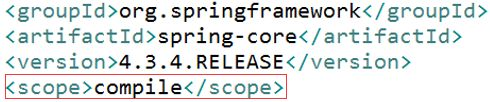

依赖
① maven解析依赖信息时会到本地仓库中取查找被依赖的jar包
- 对于本地仓库中没有的会去中央仓库去查找maven坐标来获取jar包，获取到jar之后会下载到本地仓库
- 对于中央仓库也找不到依赖的jar包的时候，就会编译失败了
② 如果依赖的是自己或者团队开发的maven工程，需要先使用install命令把被依赖的maven工程的jar包导入到本地仓库中
举例：现在我再创建第二个maven工程HelloFriend，其中用到了第一个Hello工程里类的sayHello(String name)方法。我们在给HelloFriend项目使用 mvn compile命令进行编译的时候，会提示缺少依赖Hello的jar包。怎么办呢？
到第一个maven工程中执行 mvn install后，你再去看一下本地仓库，你会发现有了Hello项目的jar包。一旦本地仓库有了依赖的maven工程的jar包后，你再到HelloFriend项目中使用 mvn compile命令的时候，可以成功编译
③ 依赖范围

scope就是依赖的范围
1、compile，默认值，适用于所有阶段（开发、测试、部署、运行），本jar会一直存在所有阶段。
2、provided，只在开发、测试阶段使用，目的是不让Servlet容器和你本地仓库的jar包冲突 。如servlet.jar。
3、runtime，只在运行时使用，如JDBC驱动，适用运行和测试阶段。
4、test，只在测试时使用，用于编译和运行测试代码。不会随项目发布。
5、system，类似provided，需要显式提供包含依赖的jar，Maven不会在Repository中查找它。